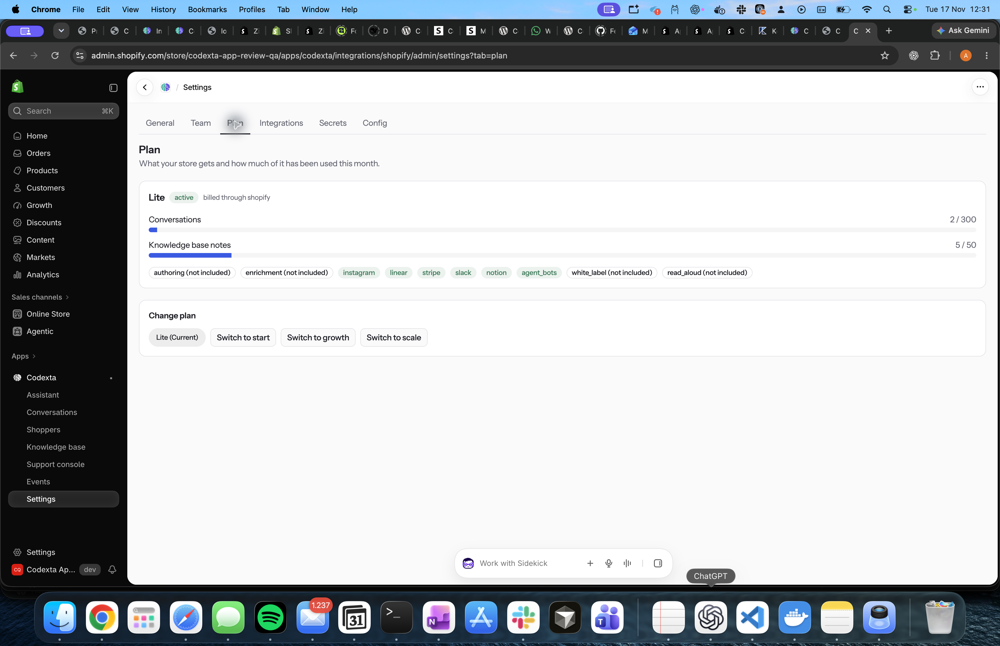
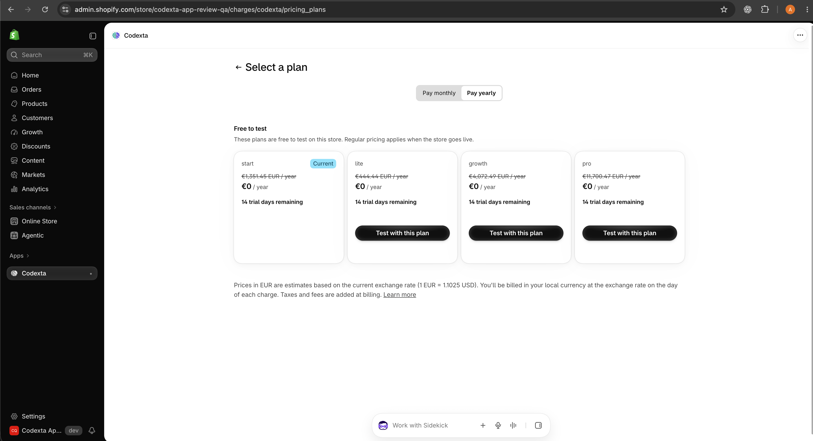

Codexta
Codexta Finding 1 · Pricing plan changes
Merchants can switch plans in the app.
On the Codexta QA development store, the Plan page showed Lite as active and offered controls to switch plans. We changed the store from Growth to Lite without reinstalling Codexta.
Plan switch completed on QA dev store · 17 Nov 2026
Available plan controls
The app’s Plan settings show the active Lite plan and the other available plans as switch actions.

Plan choices and prices are visible before selection
Choosing “Select a plan” now opens Shopify’s pricing page with Start, Lite, Growth and Pro visible together. The page includes the monthly/yearly billing switch, trial period and estimated regular prices. For this development-store test, the plans are marked free to test and show €0/year.
